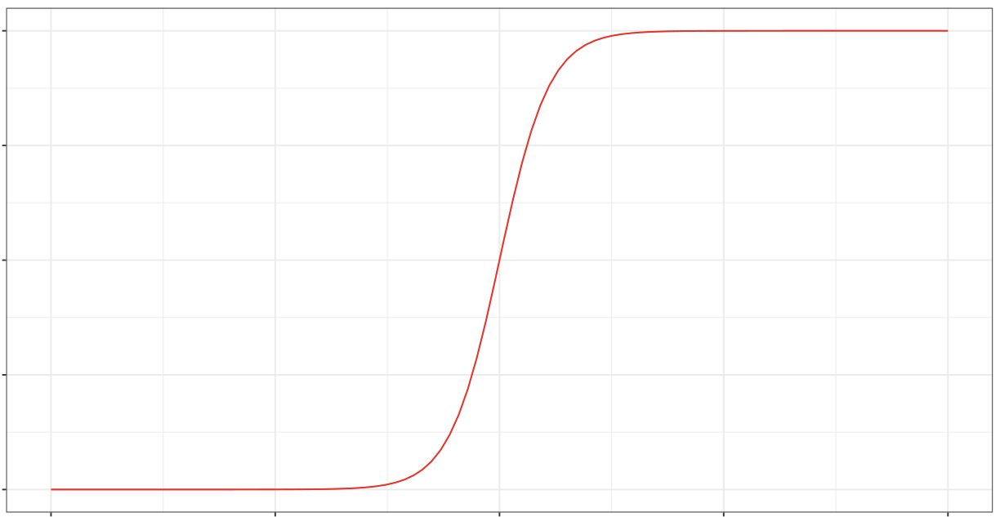
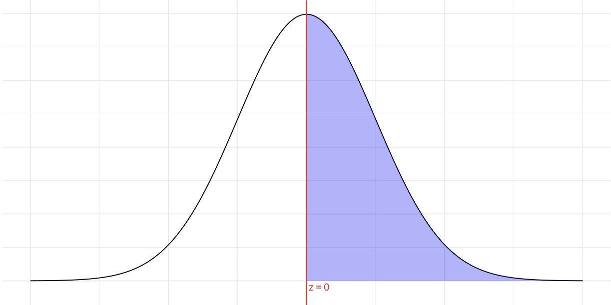

Intro Biostatistics Resources
About
Home
Intro Biostatistics Resources
Home
Tutorials
Shiny Apps
Categories
All
(25)
Exploratory Data Analysis (EDA)
(2)
Probability Distributions
(2)
R Tutorials
(6)
Regression
(8)
Sampling Distributions
(4)
Statistical Inference
(9)
R Tutorials
Tutorial 1: Installing R and RStudio
R Tutorials
This tutorial was developed based on this resource. The goal is to make sure you have R and Rstudio installed on your computer and make sure you have a folder set up for…
Haley Grant
Tutorial 2: R Objects, Functions, and Packages
R Tutorials
In this tutorial, you will learn about working with objects in R. In particular, this tutorial will cover…
Haley Grant
Tutorial 3: Importing Data into R
R Tutorials
In this tutorial, you will learn about working with data in R. In particular, this tutorial will cover importing data from various file types into R including:
Haley Grant
Tutorial 4: Data Frames in R
R Tutorials
By now you should have learned to install R and R Studio, learned a little about types of objects and functions in R, and learned to import data into R. If you’re not sure…
Haley Grant
Tutorial 5: Data Visualization in R
R Tutorials
Exploratory Data Analysis (EDA)
In this tutorial, we will cover data visualization in R using the
ggplot2
package (one of the packages included in the
tidyverse
). Specifically, we will learn about
Haley Grant
Tutorial 6: Data Summarization in R
R Tutorials
Exploratory Data Analysis (EDA)
In this tutorial, we will be covering how to summarize data using R. This can include:
Haley Grant
No matching items
Shiny Apps
ANOVA
Statistical Inference
App to demonstrate intuition behind ANOVA
Haley Grant
Collinearity in MLR
Regression
App to demonstrate how collinearity leads to variance inflation
Haley Grant
Confidence Intervals and Prediction Intervals
Statistical Inference
Regression
App to demonstrate intuition behind confidence vs prediction intervals
Haley Grant
Inference For Proportions
Sampling Distributions
Statistical Inference
App to visualize Z-test and exact binomial tests for proportions
Haley Grant
Inference Visualization
Sampling Distributions
Statistical Inference
App to visualize the relationship between confidence intervals and hypothesis testing
Haley Grant
LOESS Smoother
Regression
App to demonstrate underlying mechanism of LOESS smoother
Haley Grant
Least Squares Regression Visualization
Regression
App to visualize the method of least squares
Haley Grant

Logistic Function Visualization
Regression
App to show the relationship between log odds and probability (logistic regression)
Haley Grant
Multiple Linear Regression
Regression
App to visualize regression with multiple predictors; adjusting for other covariates
Haley Grant
Paired vs Unpaired T: Variance
Statistical Inference
App to the variance of the difference of two sample means when data are correlated vs uncorrelated
Haley Grant
Power and Sample Size
Sampling Distributions
Statistical Inference
App to visualize statistical power
Haley Grant
QQ Plot Visualization Tool
Probability Distributions
App to understand QQ plots
Haley Grant
ROC Curves
Regression
App to visualize ROC curves, sensitivity, and specificity
Haley Grant
Regularization
Regression
App to demonstrate how regularized regression works
Haley Grant
Sampling Activity
Sampling Distributions
In-class activity to simulate a sampling distribution
Haley Grant
Sampling Distributions and Bootstrapping
Statistical Inference
App to visualize bootstrapping
Haley Grant

Standard Normal Distribution Visualization
Probability Distributions
App to visualize standard normal probabilities and quantiles
Haley Grant
T Test Visualization
Statistical Inference
App to show intuition behind t-tests
Haley Grant
T under null vs alt
Statistical Inference
App to demonstrate distribution of test statistics under null and alternative
Haley Grant
No matching items